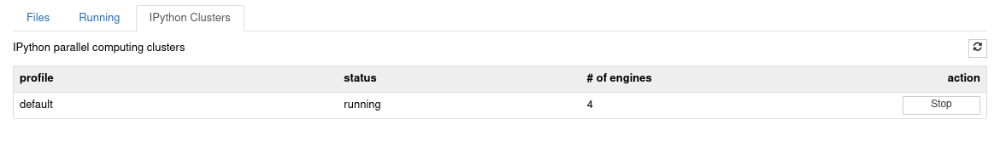

38. Computación paralela en Python#
38.1. Introducción#
En capítulos anteriores hemos visto como ganar rendimiento en operaciones SIMD usando NumPy. Luego aprendimos a conectar con lenguajes de bajo nivel usando Cython
En este capítulo veremos una opción para ganar rendimiento en tareas limitados en CPU que sean “separables”.
- Tarea separable
Tarea que puede dividirse en subtareas independientes. Es decir que una subtarea cualquiera no depende de ninguna otra subtarea
Al ser independientes significa que podemos resolverlas al mismo tiempo, es decir resolver cada una sin esperar el resultado de los demás
Nota
(Arquitectura de computadores) Hoy en día incluso los CPU de sobremesa son en realidad múltiples CPU unidos
Es decir que podemos escribir programas que aprovechan los CPU multi-nucleo y así resolver problemas o tareas separables en un menor tiempo. Esto es lo que llamamos computación paralela
Nota
En la práctica muchos problemas de computación científica (modelamiento, simulación) son paralelizables o incluso “masivamente paralelizables”
Asumiendo que el problema al que nos enfrentamos es limitado en CPU el primer paso es hacer profiling para encontrar los cuellos de botella. Luego de esto debemos estudiar las zonas críticas y detectar oportunidades para paralelizar
El objetivo es encontrar sectores del programa que sean separables. Algunas preguntas típicas que pueden servir para esto son:
¿Existen ciclos
fordonde las iteraciones son independientes entre sí?¿Es posible descomponer la operación o los datos?
¿Existe una estructura de tipo pipeline?
Si alguna de estas respuestas es afirmativa entonces lo que resta es usar alguna herramienta de programación paralela para reescribir dicho sector del programa. A continuación veremos algunas herramientas para Python
38.2. El Global interpreter lock (GIL) de Python#
El manejo de memoria de CPython no es thread-safe. Por esta razón todo código escrito en Python está sujeto a un mutex que lo proteje conocido como Global Interpreter Lock (GIL)
El GIL obliga a ejecutar solo un hilo de código Python a la vez. Además el código escrito en Python no tiene control sobre el GIL. Por esta razón no es directo ni fácil que un proceso Python puedo usar múltiples nucleos de CPU
En esta lección exploraremos dos alternativas generales
1: Realizar cómputo paralelo con múltiples hilos que comparten memoria. Para esto usaremos
cythonpara levantar el GIL y las directivas deOpenMPpara implementar este tipo de paralelismo2: Realizar cómputo paralelo con multiples procesos (fork). En este escenario los procesos tiene su propio espacio de memoria y su propio GIL, por lo que no es necesario usar
cython. En general el overhead es mucho mayor que en el caso 1. Usaremos la libreríaipyparallelpara implementar este tipo de paralelismo
Existe una tercera alternativa más accesible pero exclusiva para hacer algebra lineal en paralelo con NumPy
3: Compilar NumPy contra una librería de álgebra lineal de alto rendimiento como MKL, ATLAS, Openblas. Estas librerías usan código de bajo nivel que levanta el GIL
38.3. Computación multi-hilo con Cython y OpenMP#
OpenMP es una API multiplataforma para computación paralela en C, C++ y Fortran. Por ejemplo en C/C++ se puede escribir un parallel for usando directivas de compilador (pragma) de OpenMP
#pragma omp parallel for
for (i = 0; i < N; i++)
a[i] = 2 * i;
Cython tiene un modulo llamado parallel que usa OpenMP como backend. Para ocupar OpenMP desde Cython es necesario
instalar OpenMP en el sistema
compilar el código Cython con
--compile-args=-fopenmp --link-args=-fopenmp
El modulo provee tres funciones principales
parallel(num_threads=None): Para crear un contexto de cómputo paralelothreadid(): Para obtener la id del hiloprange([start,] stop[, step][, nogil=False][, schedule=None[, chunksize=None]][, num_threads=None]): Un iterador similarrangepero que implemente un cicloforparalelo
También se pueden usar funciones de OpenMP importando
cimport openmp
El principal requisito es que las funciones paralelas deben liberar el GIL. En Cython podemos liberar el GIL en una sección de código o en una función con el keyword nogil
Ejemplo: Cálculo paralelo del kernel Gaussiano entre dos vectores
El kernel Gaussiano se define como
En este ejemplo asumiremos \(\gamma=1\). Escribamos un código en Cython de referencia y otro paralelo con OpenMP para calcular esta función.
%load_ext cython
%%cython -f -c=-O3 -c=-march=native
cimport cython
cdef extern from "math.h":
double exp (double)
@cython.boundscheck(False)
@cython.wraparound(False)
def suma_vectores_cython(double [::1] x, double [::1] y, double [::1] z):
cdef:
Py_ssize_t i
int N = x.shape[0]
for i in range(N):
z[i] = exp(-(x[i] - y[i])**2)
En el código paralelo realizaremos tres cambios
Modificamos la magia
%%cythonpara compilar contra openmpAgregamos
nogilen las secciones paralelas. Todas las funciones llamadas en la sección paralela deben liberar el GILImportamos
cython.parallel.prangepara reemplazar elrangeoriginal. En este caso especifiremos \(4\) hilos enprange
%%cython --compile-args=-fopenmp --link-args=-fopenmp --force
# Compilamos con directivas OpenMP
cimport cython
from cython.parallel import prange # Importamos prange
cdef extern from "math.h" nogil: # Liberamos el GIL
double exp (double)
@cython.boundscheck(False)
@cython.wraparound(False)
def suma_vectores_openmp(double [::1] x, double [::1] y, double [::1] z):
cdef:
Py_ssize_t i
int N = x.shape[0]
with nogil: # Liberamos el GIL
for i in prange(N, num_threads=4): # For paralelo con 4 hilos
z[i] = exp(-(x[i] - y[i])**2)
A continuación se realiza un profiling en base a datos creados artificialmente
import numpy as np
N = 1000000
x = np.random.randn(N)
y = np.random.randn(N)
z = np.empty_like(x)
# Versión numpy
time_numpy = %timeit -r10 -n3 -o np.exp(-(x-y)**2)
12.4 ms ± 117 µs per loop (mean ± std. dev. of 10 runs, 3 loops each)
# Versión cython
time_cython = %timeit -r10 -n3 -o suma_vectores_cython(x, y, z)
12.1 ms ± 1.03 ms per loop (mean ± std. dev. of 10 runs, 3 loops each)
time_numpy.average/time_cython.average
1.0276477837729663
# Versión cython con openmp
time_openmap = %timeit -r10 -n3 -o suma_vectores_openmp(x, y, z)
6.27 ms ± 273 µs per loop (mean ± std. dev. of 10 runs, 3 loops each)
time_numpy.average/time_openmap.average
1.9787374609354715
Finalmente comprobamos que el resultado es idéntico al de NumPy
z = np.empty_like(x)
suma_vectores_openmp(x, y, z)
np.allclose(np.exp(-(x-y)**2), z)
True
38.4. Computación multi-proceso con IPython: ipyparallel#
ipyparallel es un paquete independiente pero complementario de IPython para hacer computación multi-proceso
Instalación con conda
conda install ipyparallel
Lo anterior debería instalar en su ambiente los ejecutables ipcluster, ipcontroller e ipengine. Adicionalmente se crea una pestaña llamada “Ipython clusters” en la interfaz de jupyter como muestra la siguiente captura:
{kind=link}
Si la interfaz no se instaló de forma automática utilice el comando:
ipcluster nbextension enable
Conceptos y uso básico
ipyparallel considera varios elementos, los más importantes son:
Engine: Es el encargado de correr código. Es una extensión del kernel de IPython
Controller: Es una interfaz para comunicarnos con el/los engine/s. La conexión se hace a través del objeto
Client
Para iniciar un controlador de forma automática podemos abrir un terminal y escribir
ipcluster start -n 4
o utilizar los controles que se encuentran en la pestaña “IPython clusters”
{kind=link}
Con esto hemos creado un controlador y cuatro engines, todos en nuestra máquina (localhost)
38.4.1. Creación de un cliente#
# Importamos ipyparallel
import ipyparallel as ipp
# Creamos la clase cliente
rc = ipp.Client()
# Verificamos que se hayan iniciado nuestro engines
rc.ids
[0, 1, 2, 3]
Cada engine tiene una id asociada. Para enviarle trabajo a los engines debemos crear una intefaz llamada View
Existen dos tipos de View: Direct y Task
La primera es controlada de forma explicita por el usuario
La segunda es controlada por el sistema para balancear la carga
38.4.2. Enviando trabajos usando interfaz Directa#
Una View de tipo Direct requiere que el usuario especifique los engines que va a usar. Esto se hace de forma similar a los slices en listas/ndarray
Por ejemplo para crear una interfaz que utilice todas las engines, usamos rc[:]. En cambio si sólo queremos utilizar las dos primeras engines, usamos rc[:2]
La vista puede crearse como bloqueante o no bloqueante (asíncrona) modificando el atributo booleano block. Una vista “bloqueante” espera a que el resultado de todos los engines sean retornado para devolver el control
# Creamos una view con
dview = rc[:]
# Por defecto es asíncrono (no bloqueante)
dview.block
False
# Podemos cambiarlo a ejecución síncrona (bloqueando) con
dview.block = True
dview.block
True
Los trabajos se envían usando las funciones de la View directa
apply,apply_sync,apply_async: Ejecutan una función con argumentosmap,map_sync,map_async: Ejecutan una función sobre una secuencia
Los apellidos sync y async cambian el flag del view momentaneamente
Cuando trabajamos en forma síncrona el resultado retorna al final de la ejecuación
Cuando trabajamos de forma asíncrona se retorna un objeto
AsyncResultque puede ser consultado más tarde por el resultado
38.4.3. Funciones de Python en paralelo con apply#
Sea una función f podemos ejecutarla en todos los engines usando
rc[:].apply(f, *args, **kwargs)
En el siguiente ejemplo se ejecuta una función anónima en todos los engines
dview.apply(lambda x, y: x+" "+y, x="Hola", y="Mundo")
['Hola Mundo', 'Hola Mundo', 'Hola Mundo', 'Hola Mundo']
38.4.4. Compartiendo módulos y datos con los engines#
Es importante tener claro que, al contrario del paralelismo multi-hilo, los procesos en los engines no comparten memoria y no ven las variables de nuestro entorno local
Por ejemplo si queremos usar una función del módulo os
#import os # Este import no lo ven los engines
def funcion():
import os # Este si
return os.getpid()
# Cada uno tiene un pid distinto
dview.apply(funcion)
[10107, 10108, 10110, 10112]
Es posible precargar un módulo en todos los engines con la función sync_imports(). Los módulos cargados persisten en el entorno de los engines
with dview.sync_imports(local=True):
import os
# El módulo quedará importado también en nuestro ambiente local
# Ahora ya no necesitamos importar os
def funcion2():
return os.getpid()
dview.apply(funcion2)
importing os on engine(s)
[10107, 10108, 10110, 10112]
Si queremos limpiar las variables y módulos de los engines podemos usar el método con clear
dview.clear()
Si ahora ejecutamos
dview.apply(funcion2)
Nos retornaría una excepción
NameError: name 'os' is not defined
38.4.5. Traspasando datos a todos los engines#
Para enviar un objeto de Python que hayamos definido en el ambiente local podemos usar la función push.
Importante
El objeto tiene que ser un diccionario
También podemos usar pull si queremos extraer una variable remota. Ambas funciones tienen un argumento llamado targets que permite apuntar los objetos a un subconjunto de engines
a = 100 # Esto no existe dentro de los engines
dview.push({'a': a}) # Ahora está en todos los engines
def funcion3():
return a**2
dview.apply(funcion3)
[10000, 10000, 10000, 10000]
# Digamos que quiero recuperar la variable 'a' pero sólo de los dos primeros engines
dview.pull('a', targets=[0, 1])
[100, 100]
38.4.6. Distribuyendo datos a los engines#
Si queremos distribuir datos en los engines podemos usar scatter. Esto sirve por ejemplo para procesar elementos de una lista en paralelo.
La función scatter recibe un string con el nombre de la variable (tal como lo recibirá cada proceso) y un arreglo con los valores de la variable
Para recuperar resultados a partir de los engine se utiliza la función gather
# Una lista con 7 elementos que será distribuida en los 4 engines usando scatter
dview.scatter('c', np.array(range(10)))
def funcion3():
global y # Creo una variable en el workspace del engine
y = c**2 # Le doy un valor
return y
display(dview.apply(funcion3))
[array([0, 1, 4]), array([ 9, 16, 25]), array([36, 49]), array([64, 81])]
# Recuperamos la salida con gather
display(dview.gather('y'))
array([ 0, 1, 4, 9, 16, 25, 36, 49, 64, 81])
También es posible distribuir arreglos de NumPy usando scatter
Nota
Los arreglos de NumPy no se copian, se traspasan read-only
datos = np.random.randn(100, 100)
dview.scatter('x', datos)
def funcion4():
# data[0, 0] = 0 # No podemos modificar los valores!
return x.shape
# Se particiona en 4 matrices por fila (row-major)
dview.apply(funcion4)
[(25, 100), (25, 100), (25, 100), (25, 100)]
Si queremos hacer modificaciones de los arreglos tenemos que hacer una copia local
datos = np.random.randn(1000, 1000)
dview.scatter('x', datos)
def funcion5():
global x
if not x.flags.writeable:
x = x.copy()
x[0, 0] = 0 # No podemos hacer esto!
return x
# Se particiona en 4 matrices por fila (row-major)
datos = np.concatenate(dview.apply(funcion5))
# Se modificaron los datos originales
display(datos[0, 0])
0.0
38.4.7. Cómputo paralelo con map#
La función built-in map de Python aplica una función sobre una secuencia de datos uno por uno. En general, si vemos un map en nuestro código, paralelizarlo es muy sencillo
La librería ipyparallel provee una versión paralela de map que se ocupa sobre una vista
rc[:].map(f, *sequences, block=self.block)
# Map de Python
resultado_serial = list(map(lambda x: x, range(32)))
# Map de ipyparallel
resultado_paralelo = dview.map(lambda x: x, range(32))
# Resultados
np.allclose(resultado_serial, resultado_paralelo)
True
Podemos entregar iteradores para más de un argumento. Si los iteradores no son del mismo largo, terminará con el iterador más corto
dview.map(lambda x, y, z: x + y + z, range(10), range(10), range(10))
[0, 3, 6, 9, 12, 15, 18, 21, 24, 27]
Si tenemos una función con algunos argumentos escalares (no iterables) podemos usar partial
from functools import partial
def function_args(x, y, gamma=1):
import numpy as np
return np.exp(-gamma*(x-y)**2)
dview.map(partial(function_args, gamma=2), np.random.randn(10), np.random.randn(10))
[0.0034422057329153723,
0.7608609409175867,
0.6413116019208527,
0.01117953633378967,
0.07695570039354538,
2.5488970107664846e-06,
8.262182175856877e-05,
0.024282631830443418,
0.8680432554367705,
0.2898821363782563]
38.4.8. Funciones remotas y paralelas con decoradores#
Podemos crear una función que es siempre ejecutada por los engines usando el decorador remote. Por ejemplo:
@dview.remote(block=True)
def funcion():
import os
return os.getpid()
funcion()
[10107, 10108, 10110, 10112]
La función se ejecutó en los cuatro engines sin llamar a dview.apply o dview.map explicitamente
De la misma forma, si tenemos una función que trabaja sobre un arreglo de forma element-wise podemos usar el decorador parallel para distribuir su carga a los engines. Por ejemplo
@dview.parallel(block = True)
def funcion(x):
return x
# Los datos se particionan en 4 grupos (uno por engine)
# Los grupos no son todos del mismo tamaño
funcion(range(10))
[range(0, 3), range(3, 6), range(6, 8), range(8, 10)]
También se pueden usar arreglos de numpy como muestra el siguiente ejemplo:
A = np.random.random((1000, 1000))
@dview.parallel(block=True)
def pmul(A,B):
return A*B
(A*A == pmul(A,A)).all()
True
38.4.9. Resultado asíncronos#
El resultado asíncrono es un objeto de clase AsyncResult. Sus funciones más relevantes son
ready: Retorna un booleano con el estado de la tareaget: Retorna el resultado
Así se lanza una tarea asíncrona
res_async = dview.map_async(lambda x: x**2, range(10))
# ¿Está listo mi tarea?
res_async.ready()
False
while True:
# Puedo hacer cómputo aquí mientras espero que termine mi tarea
if res_async.ready():
# Recupero el resultado
res = res_async.get()
break
res
[0, 1, 4, 9, 16, 25, 36, 49, 64, 81]
Ver también
Otras funcionalidades de ipyparallel no vistas en esta lección
Balance de carga automático en ipyparallel con la interfaz Task
Computación distribuida en base a MPI usando
ipengineeipcontroller